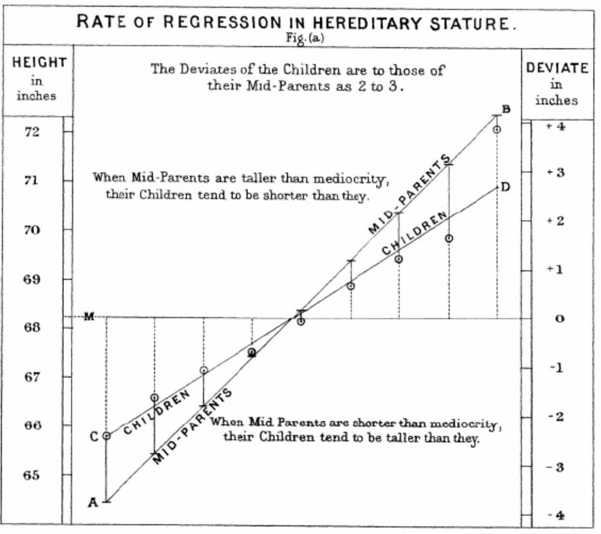

A minimodule on linear regression — from Victorian curiosity to the engine of modern AI
In 1885, Francis Galton was studying something surprisingly human: the height of parents and their children. He noticed something curious — tall parents tended to have tall children, but those children were usually a little shorter than their parents. Short parents had short children, but slightly taller ones. Everything seemed to drift back toward the average.

He called this phenomenon "regression to the mean" — and the name stuck, long after the concept grew into something far more powerful.
What Galton was really doing, without modern language for it, was drawing a line through a cloud of points. A line that best captured the relationship between two things: parent height and child height. That line is what we now call a regression line.
At its heart, linear regression is the art of finding the best straight line through a set of data points. Given two variables — say, hours studied and exam score, or house size and price — we want to describe how one changes as the other changes. That line has a simple form:
The challenge: how do we find the best values of \(w_0\) and \(w_1\)?
"Best" needs a definition. The most natural one: the best line is the one that minimizes the total distance between the line's predictions and the actual data points. We call these distances residuals.
To avoid positive and negative errors cancelling each other out, we square them. This gives us the Sum of Squared Errors (SSE), also called the loss function:
Here, \(y_i\) are the real values and \(\hat{y}_i\) are our predictions. We want to make \(L\) as small as possible.
The beautiful thing about this problem is that it has an exact, closed-form solution. Using calculus, we set the derivatives of \(L\) with respect to \(w_0\) and \(w_1\) to zero and solve. The result is:
Where \(\bar{x}\) and \(\bar{y}\) are simply the averages of \(x\) and \(y\).
In matrix form — useful when we have many input variables — this becomes even more compact:
This is known as the Ordinary Least Squares (OLS) solution. Plug in your data, compute the formula, and you immediately get the optimal line. No guessing, no iteration — just math.
Now let's shift perspective. What if, instead of solving the formula directly, we taught a computer to find the best line through trial and error? This is where linear regression becomes the simplest example of a machine learning algorithm.
The setup has four ingredients:
That "downhill direction" is given by the gradient — the partial derivatives of \(L\):
At each step, we update the weights by moving against the gradient (since we want to go downhill):
Where \(\alpha\) (alpha) is the learning rate — the size of each step. Too large, and you overshoot the valley. Too small, and it takes forever to get there.
After many iterations, the weights converge to their optimal values — the same ones the OLS formula would have given you directly.
You and a partner each get your own weight space — a 2D plane of possible \((w_0, w_1)\) pairs. Click anywhere in your panel to test that combination. Dots glow red when you are close to a good fit and blue when you are far. After each guess you'll see Warmer or Colder compared to your own previous attempt. Ten turns total, alternating. Lowest MSE wins.
For linear regression, gradient descent is overkill — we have the exact formula. But the real power is that this same loop:
model → loss → gradient → update
…is the engine behind every neural network, every large language model, every modern AI system. The architecture changes. The loss function changes. The gradients get more complex. But the loop stays the same. Linear regression is where that story begins.
The game is written in Python using Pygame, so you can open main.py and modify it directly. The source code is available here: